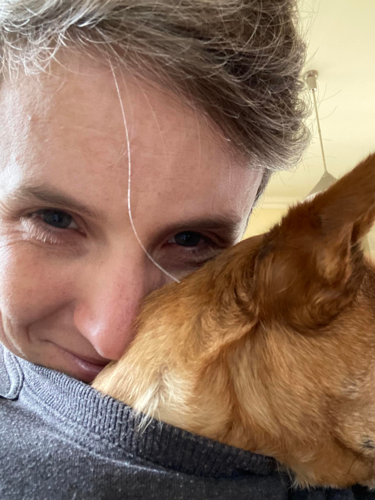
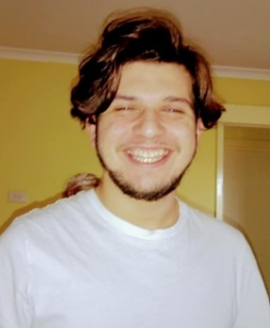
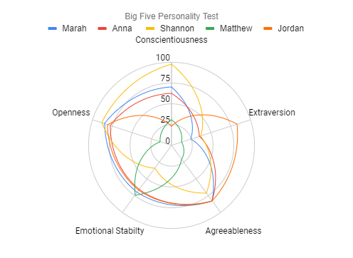

Anna

|
Hi, my name is Anna, and I am 20 years old. Since graduating high school I have been working in a customer facing role at a bank. I enjoy cooking in my spare time and trying foods from other cuisines. I am also an aquarium hobbyist and love to keep fish. As a side hustle, I make a little bit of pocket change by selling guppies and cherry shrimp. Two TV shows that I am currently watching are ‘The Boys’ and ‘Better Call Saul’. I became interested in IT as a potential career path as it is such a broad field and there are many areas that I could foray into. I do not have that much practical knowledge in IT. However, my father works in the IT sector, and I can see that he really enjoys his job. He encouraged me to try out some IT courses to see if it would suit me as well. I chose RMIT as this course was flexible enough to allow me to work during the weekdays. I am also looking at possibly enrolling in the Bachelor of IT once I finish the foundation subjects. Through this course I hope to gain a better understanding of what IT involves and the potential pathways into a career. I also hope to pick up some practical skills such as coding along the way. |
| Shannon

|
I was born in Australia with both English and Scandinavian heritage. Like most Australians, I’m unfortunately monolingual, although my daughter and I are currently learning some Mandarin. I can also read enough Italian to cook Italian-language recipes (I’m highly motivated by pasta!). My previous degrees include a Bachelor of Arts with a major in Archaeology and Classics; a Master of Teaching; and a Bachelor of Food Science and Nutrition. It will perhaps not surprise you to hear that I work as an administration officer and put most of my energy into my hobbies. I live in a flat overlooking a duck pond with my daughter and a particularly angry Chihuahua. |
| Marah
|
My name is Marah, I’m 24 years old and I have three siblings, two sisters and a brother. I am a dual citizen; Australian and Jordanian and I moved to Melbourne in February of 2022. I currently live here with my brother who is a year younger than me.
Before moving to Melbourne, I was living in Amman, Jordan in the Middle East and I speak both English and Arabic fluently. I was born in Doha Qatar and have also lived in Sydney previously. Something I think is interesting is that each one of my siblings and I was born in one of the places we’ve lived throughout our childhood. My older sister was born in the city of Amman in Jordan, I was born in the city of Doha in Qatar, my brother was born in Melbourne and my little sister was born in Sydney.
I’ve been studying for a very long time, but the highest certificate I have achieved so far is a High School Diploma. I graduated High School in Jordan in 2016 and studied a Computer Engineering major for four years on and off at the German Jordanian University in Jordan before I had to drop out due to some family circumstances. I am now trying to get back on track to getting a degree in IT by taking some units through Open Universities Australia in hopes of the leading to a degree in Information Technology from RMIT. |
Matthew

|
My name is Matthew (but I prefer Quinn), I am 17 years old and my background I full Australian, I was born in Melbourne and moved to NSW when I was in the middle of primary school. My hobbies in include gaming (MineCraft, Sea OF Thieves, Roblox, OverWatch, Gorn, ETC.), watching animes (One Piece, Sword Art Online, Dragon Ball Z/Super, Demon Slayer, Code Geass: Lelouch of the Rebellion, That Time I got Reincarnated as a Slime, ETC.) and tv shows (the office, Brooklynn nine nine, oak island, the secrets of Skinwalker ranch, ETC.) my IT interest stems from my childhood, since my father is in the IT industry, I have been surrounded by IT items my whole life, playing around with them and learning how they work from a young age. My IT experience has been personal projects such as: using a raspberry pi (1 and 3) and loading emulators on the pi (retro pi, retroarch and dosbox). Primarily SNES emulator and play SNES ROMS (most of the SNES games are in public domain so there is no risk of piracy). |
| jordan

|
Hi, my name is Jordan and I live in Ballarat, Victoria I was born in Australia and spent most of my life in the inner western suburbs until recently. My background is half Chilean and half Spanish, and I would love to learn Spanish the only language I know is English. I have studied up to year 12 and competed my VCE I went straight into university studying a Bachelor of Info tech with RMIT I ended up leaving due to personal circumstances so now I’m back to finish what I started. In terms of Info tech, I am extremely interested in programming and studied JAVA all through year 11 and 12 and still program in my spare time for fun. I also love to play the guitar and music is one of my biggest passions. |
| Team Member |
MBTI |
Big 5 Personality Test |
Learning Style |
|
Anna
|
INTP-A |
Agreeableness - 83%
Openness - 78%
Conscientiousness - 63%
Emotional Stability - 66%
Extraversion - 35% |
Visual |
|
Shannon
|
INFJ-A |
Agreeableness - 71%
Openness - 88%
Conscientiousness - 98%
Emotional Stability - 34%
Extraversion - 37% |
Visual/Tactile |
Marah
| ISFP-T |
Agreeableness - 83%
Openness - 85%
Conscientiousness - 70%
Emotional Stability - 70%
Extraversion - 24% |
Tactile |
|
Matthew
|
ISTJ-A
|
Agreeableness - 21%
Openness - 14%
Conscientiousness - 31%
Emotional Stability - 74%
Extraversion - 13% |
Pragmatist |
|
Jordan
| ENFP-T |
Agreeableness - 83%
Openness - 81%
Conscientiousness - 23%
Emotional Stability - 67%
Extraversion - 83% |
Visual/Tactile |
|
MBTI

The MBTI test is based upon Jungian cognitive functions. The above radar chart maps the the strengths and weaknesses of the teams MBTI personalities. From this chart it is apparent that team overall has a well-balanced spread of strengths. While members all appear to be deficient in some areas this is compensated by the strengths of other members. However, the weak points as a team appears to be being ‘attentive’ and ‘organized’. Special effort is likely needed by all members to keep this in mind as we go through our assignments together.
Big Five Personality Test

The radar chart above plots the team members results from The Big Five Personality Test. It shows that most members of the team are introverted except for Jordan, who had the highest extraversion score. This may indicate that Jordan may be the team member who may take lead of the conversations during team meetings. Other member may need to also take this result in mind to concentrate on trying to speak up and contribute more during assignments.
Learning Styles
The majority of group received the result of being a visual or tactile learner. Visual Learners (Anna, Jordan, Shannon) would likely best work in by doing research, taking notes and making diagrams. Tactile learners may find more benefit in group work as they are able put their knowledge in action (Marah, Jordan, Shannon). Pragmatist learner (Matthew) best learn with experimenting with their knowledge, so they may be more suited to fo focusing on project innovation and brainstorming ideas.